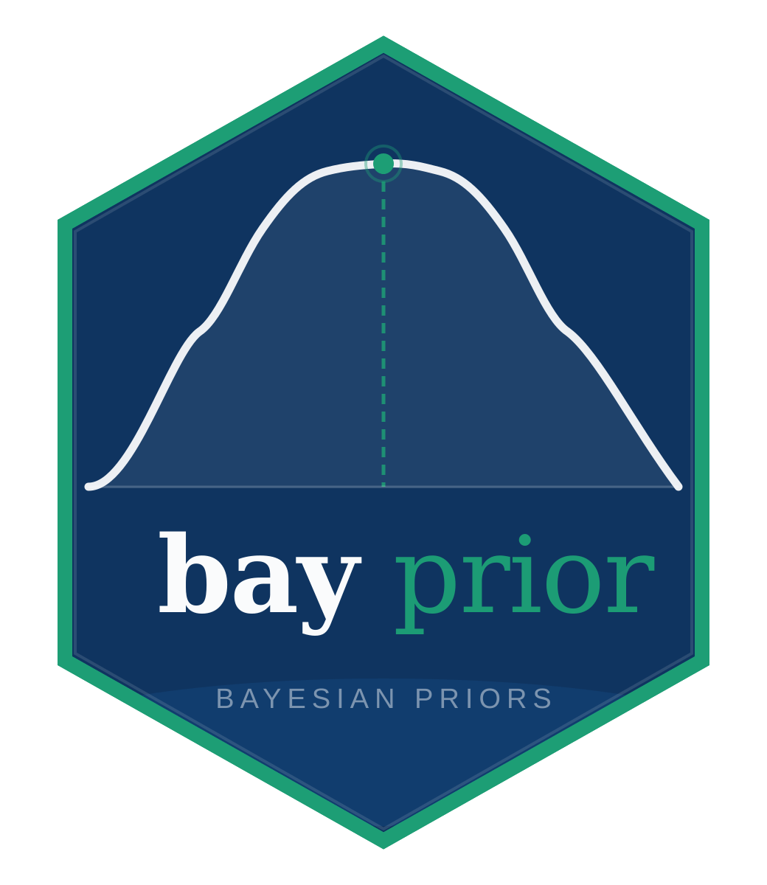

bayprior

bayprior: Bayesian Prior Elicitation for Clinical Trials


Overview
bayprior is an advanced interactive R package and Shiny application designed for biostatisticians and clinical researchers to implement Bayesian Prior Elicitation, Conflict Diagnostics, and Sensitivity Analysis for clinical trials.
The package addresses the upstream problem that existing Bayesian trial packages (trialr, RBesT, hdbayes) largely ignore: how do you construct, validate, and justify your prior to a regulator? The FDA’s 2026 draft guidance on Bayesian methods makes this a live, urgent need — with no unified R tool previously addressing it.
bayprior enables users to:
- Elicit structured priors — SHELF-style quantile matching, moment matching, and the interactive roulette method across Beta, Normal, Gamma, Log-Normal, Exponential, and Weibull families.
- Aggregate expert opinions — Linear or logarithmic pooling of multiple expert priors with pairwise Bhattacharyya agreement diagnostics and cross-family compatibility validation.
- Diagnose prior-data conflict — Box’s p-value, surprise index, Bhattacharyya overlap, and multivariate Mahalanobis distance, supporting binary, continuous, Poisson/count, and survival data types.
- Quantify sensitivity — Posterior conclusions evaluated across hyperparameter grids via tornado plots and influence heatmaps, with independent data entry.
- Build robust priors — Sceptical, robust mixture, and calibrated power priors for regulatory sensitivity analyses.
- Generate regulatory reports — Self-contained HTML, PDF, or Word (.docx) prior justification reports aligned with FDA/EMA submission expectations, rendered via Quarto.
Features and Modules
| Module | Detail | Primary Output | Goal |
|---|---|---|---|
| Prior Elicitation | Quantile matching, moment matching, SHELF roulette for Beta / Normal / Gamma / Log-Normal / Exponential / Weibull | Fitted density plot + parameter table | Structured expert prior elicitation |
| Expert Pooling | Linear and logarithmic opinion pooling with support compatibility validation | Consensus density overlay + Bhattacharyya matrix | Aggregate multi-expert beliefs |
| Conflict Diagnostics | Box p-value, surprise index, KL divergence, Bhattacharyya overlap; binary, continuous, Poisson, and survival data | Prior–Likelihood–Posterior overlay | Detect prior misspecification |
| Mahalanobis Check | Two-endpoint multivariate conflict test | Chi-sq p-value + per-parameter z-scores | Co-primary endpoint trials |
| Sensitivity Analysis | Hyperparameter grid over posterior mean, SD, CrI width, Pr(efficacy); independent data entry | Tornado plot + influence heatmap | Demonstrate robustness to regulators |
| Sceptical Prior | Spiegelhalter–Freedman centred-at-null prior | Prior density + summary statistics | Conservative regulatory sensitivity |
| Robust Mixture | Schmidli et al. MAP robust mixture prior | Robust vs informative density overlay | Protection against misspecification |
| Power Prior | Ibrahim–Chen calibrated borrowing weight via Bayes Factor | Calibration curves + optimal δ | Principled historical data borrowing |
| Export Report | HTML / PDF / Word (.docx) prior justification document via Quarto | Regulatory-ready self-contained report | FDA/EMA submission documentation |
Core Methodology
Prior Elicitation
Three structured elicitation approaches are implemented. Quantile matching fits a parametric distribution to expert-specified probability–value pairs via numerical optimisation. Moment matching derives hyperparameters analytically from an expert-supplied mean and SD. The SHELF roulette method (Oakley & O’Hagan, 2010) lets the expert allocate chips across histogram bins, fitting a parametric family to the chip allocation in real time.
All three methods support six distribution families:
| Family | Support | Typical use |
|---|---|---|
| Beta | (0, 1) | Response rates, proportions |
| Normal | (−∞, ∞) | Mean differences, log odds ratios |
| Gamma | (0, ∞) | Event rates, variances, survival times |
| Log-Normal | (0, ∞) | Hazard ratios, PK parameters |
| Exponential | (0, ∞) | Constant hazard rates, Poisson rate priors |
| Weibull | (0, ∞) | Non-constant hazard survival times (OS, PFS) |
Exponential priors support "moments", "rate", and "quantile" methods. Weibull priors support "moments", "params", and "quantile" methods.
Prior-Data Conflict Diagnostics
Conflict detection follows Box (1980). Four complementary metrics are computed:
- Prior predictive p-value — tests whether observed data is plausible under the prior predictive distribution.
- Surprise index — standardised distance between prior mean and observed data.
- Bhattacharyya overlap — distributional overlap between prior and normalised likelihood.
- KL divergence — information-theoretic distance from prior to likelihood.
Four data types are supported:
| Data type | Conjugate update | Typical endpoint |
|---|---|---|
| Binary (x events / n) | Beta–Binomial | Response rate, ORR |
| Continuous (mean, SD, n) | Normal–Normal | Mean difference, HbA1c |
| Poisson / count (events / exposure) | Gamma–Poisson | Adverse event rate |
| Survival (events / follow-up time) | Gamma–Exponential | Hazard rate, OS, PFS |
Validation and Compatibility Checks
bayprior includes a comprehensive validation layer:
- Prior–data compatibility — warns when a prior family is atypical for the selected data type.
- Pooling compatibility — blocks pooling of distributions with incompatible supports; warns for same-support cross-family pooling.
- Sensitivity compatibility — warns for single-parameter families and cross-family mixture grids; blocks incompatible-support mixtures.
Sensitivity Analysis
The sensitivity module is fully independent of conflict diagnostics — users can enter observed data directly without running conflict diagnostics first. Results are visualised as tornado plots and influence heatmaps. A dedicated sensitivity_cri() function tracks credible interval width specifically — a key regulatory quantity.
Robust and Power Priors
The robust mixture prior (Schmidli et al., 2014) mixes the informative prior with a vague Normal component. The sceptical prior (Spiegelhalter & Freedman, 1994) is centred at the null treatment effect. The power prior (Ibrahim & Chen, 2000) down-weights historical data by δ ∈ (0, 1], calibrated to achieve a target Bayes Factor.
User Interface
The Shiny app includes a dark / light mode toggle persisted via browser localStorage. All module outputs reset automatically when inputs change, preventing stale results from being shown alongside new inputs.
Prior Elicitation Panel
- Distribution family: Beta, Normal, Gamma, Log-Normal, Exponential, or Weibull
- Elicitation method: Quantile matching, moment matching, or roulette
- Output reset: Panel resets to placeholder on any input change; active prior indicator stays on until a new prior is explicitly fitted
- Value boxes: Prior mean, SD, and 95% CrI at a glance
Conflict Diagnostics Panel
- Data type: Binary, continuous, Poisson/count, or survival
- Compatibility check: Alert if prior family is atypical for chosen data type
- Diagnostic statistics: Box p-value, surprise index, and overlap with colour-coded severity
Sensitivity Analysis Panel
- Independent data entry: Own data type selector with auto-detection from prior family
- Analysis type: “Posterior quantities” or “Credible interval” with CrI level slider
- Visualisations: Tornado plot and interactive influence heatmap
Robust Priors Panel
- Robust mixture: Vague weight slider
- Sceptical prior: Family and strength selection
- Power prior: Historical and current data entry; calibration curves
Report Export Panel
- Format: HTML (self-contained), PDF (xelatex), or Word (.docx)
- All formats embed figures correctly
- Single-click render and download
Installation
# Development version from GitHub:
pak::pak("ndohpenngit/bayprior")
# Or (with vignettes):
devtools::install_github("ndohpenngit/bayprior", build_vignettes = TRUE)PDF reports require Quarto CLI and a LaTeX installation:
install.packages("tinytex") tinytex::install_tinytex() # If PDF fails with missing package errors: tinytex::tlmgr_install(c("tikzfill", "pgf", "tcolorbox", "environ", "pdfcol"))
Reproducible environment (renv)
renv::restore()Quick Start
library(bayprior)
# ── Elicit a Beta prior ───────────────────────────────────────────────────────
prior <- elicit_beta(mean = 0.35, sd = 0.10, method = "moments",
label = "Response rate", expert_id = "Expert_1")
plot(prior)
# ── Elicit an Exponential prior (hazard rate) ─────────────────────────────────
prior_hz <- elicit_exponential(mean = 0.05, method = "moments",
label = "Hazard rate")
plot(prior_hz)
# ── Elicit a Weibull prior (OS in months) ─────────────────────────────────────
prior_wb <- elicit_weibull(mean = 20, sd = 10, method = "moments",
label = "OS (months)")
plot(prior_wb)
# ── Pool two experts ──────────────────────────────────────────────────────────
e1 <- elicit_beta(mean = 0.30, sd = 0.10, method = "moments", expert_id = "E1",
label = "Response rate")
e2 <- elicit_beta(mean = 0.42, sd = 0.12, method = "moments", expert_id = "E2",
label = "Response rate")
agg <- aggregate_experts(list(E1 = e1, E2 = e2), weights = c(0.6, 0.4))
# ── Conflict diagnostics — binary data ────────────────────────────────────────
cd <- prior_conflict(prior, list(type = "binary", x = 18, n = 40))
print(cd)
# ── Conflict diagnostics — Poisson / count data ───────────────────────────────
pg <- elicit_gamma(mean = 0.15, sd = 0.06, method = "moments", label = "AE rate")
prior_conflict(pg, list(type = "poisson", x = 12, n = 100))
# ── Conflict diagnostics — survival data ──────────────────────────────────────
prior_conflict(prior_hz, list(type = "survival", x = 20, n = 400))
# ── Sensitivity analysis ──────────────────────────────────────────────────────
sa <- sensitivity_grid(
prior,
data_summary = list(type = "binary", x = 18, n = 40),
param_grid = list(alpha = seq(1, 8, 0.5), beta = seq(2, 20, 1)),
target = c("posterior_mean", "prob_efficacy"),
threshold = 0.30
)
plot_tornado(sa)
# ── Robust prior ──────────────────────────────────────────────────────────────
rob <- robust_prior(prior, vague_weight = 0.20)
scep <- sceptical_prior(null_value = 0.20, family = "beta",
strength = "moderate", label = "Response rate (sceptical)")
# ── Generate regulatory report ────────────────────────────────────────────────
prior_report(
prior = prior,
conflict = cd,
sensitivity = sa,
robust_prior = rob,
sceptical_prior = scep,
output_format = "html",
trial_name = "TRIAL-001",
sponsor = "Example Pharma Ltd",
author = "N.P., Biostatistician"
)
# ── Launch the Shiny app ──────────────────────────────────────────────────────
run_app()Vignettes
| Vignette | Covers |
|---|---|
bayprior-introduction |
Full end-to-end workflow overview |
prior-elicitation |
All six families and three elicitation methods |
conflict-diagnostics |
All four data types; univariate and multivariate |
sensitivity-analysis |
Grid sensitivity, tornado plots, CrI tracking |
robust-priors |
Robust mixture, sceptical, and power priors |
regulatory-reporting |
Report generation, FDA/EMA compliance checklist |
browseVignettes("bayprior")References
- O’Hagan, A. et al. (2006). Uncertain Judgements: Eliciting Experts’ Probabilities. Wiley.
- Box, G. E. P. (1980). Sampling and Bayes’ inference in scientific modelling and robustness. JRSS-A, 143, 383–430.
- Oakley, J. E. & O’Hagan, A. (2010). SHELF: the Sheffield Elicitation Framework. University of Sheffield.
- Schmidli, H. et al. (2014). Robust meta-analytic-predictive priors in clinical trials with historical control information. Biometrics, 70, 1023–1032.
- Ibrahim, J. G. & Chen, M.-H. (2000). Power prior distributions for regression models. Statistical Science, 15, 46–60.
- Spiegelhalter, D. J., Freedman, L. S. & Parmar, M. K. B. (1994). Bayesian approaches to randomized trials. JRSS-A, 157, 357–416.
- FDA (2026). Draft Guidance: Bayesian Statistical Methods for Drug and Biological Products.